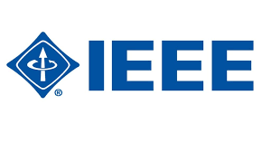
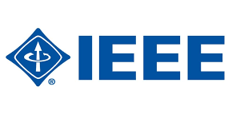

IEEE - Institute of Electrical and Electronics Engineers
The IEEE is the world's largest technical professional organization dedicated to advancing technology for the benefit of humanity. As a member of the IEEE, I have been actively involved in various events and initiatives.
 
